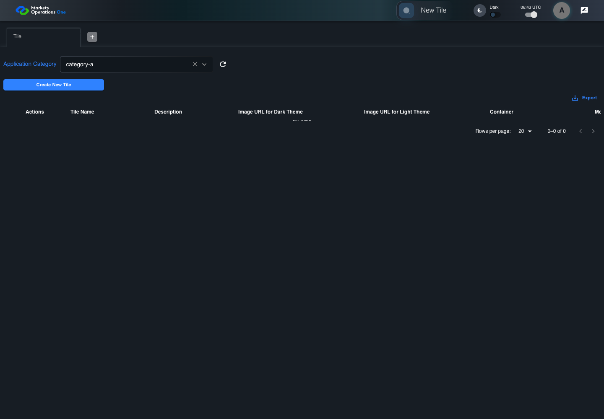
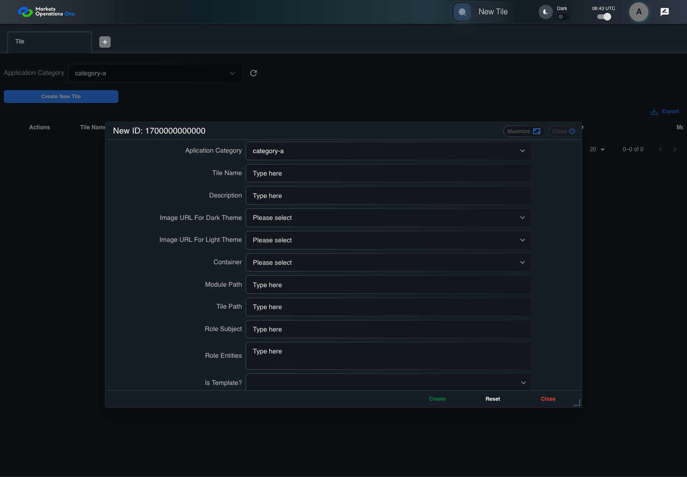
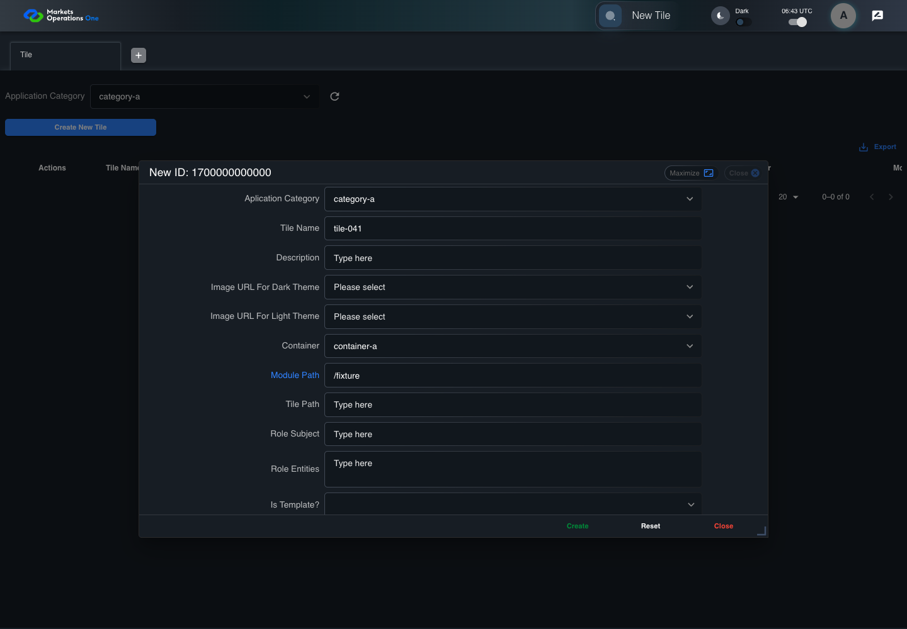
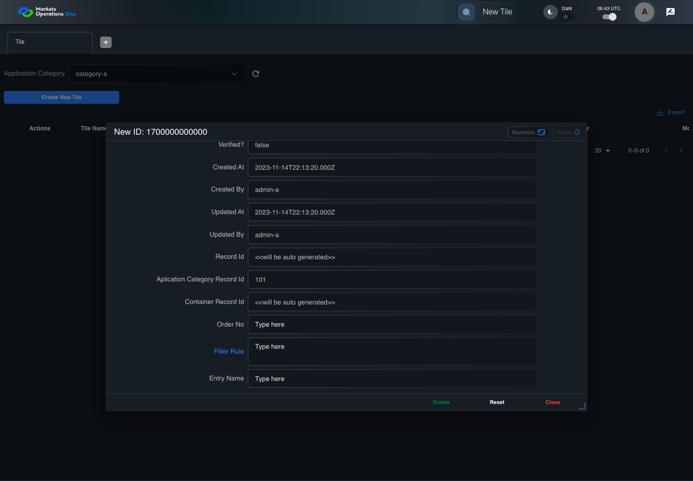
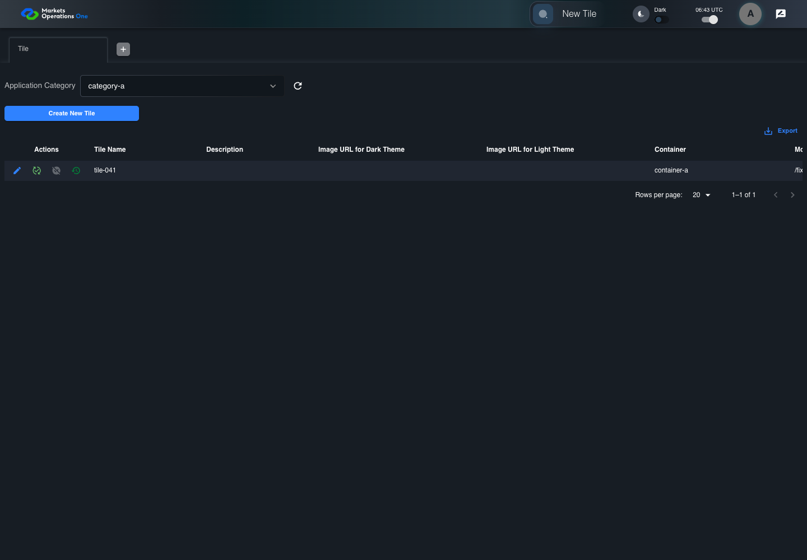
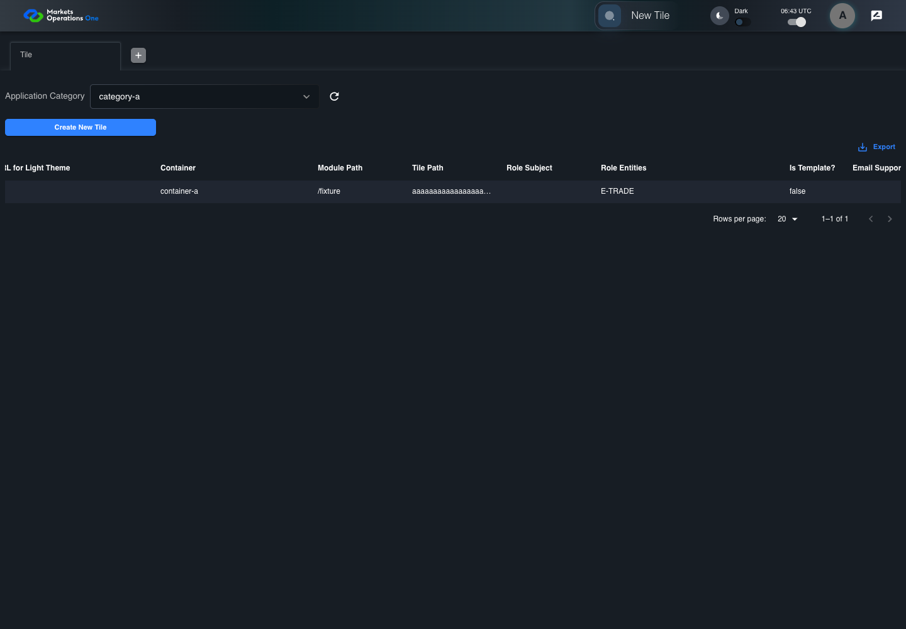

BFF-ADM-041 current BFF administration through actual UI
PASS · application/run-072/bff-adm-041-current-bff-administration-through-actual-ui-3537f9bae2fb-attempt-1 · ACTUAL_APPLICATION_LOCAL_SERVICES
Actual current React and exact-current BFF admin controllers/services/JPA with actual migration DDL in disposable PostgreSQL. Controlled OUD/EMS2 identities and local Spring bootstrap. Fixture SQL seeds/mutates isolated records; service errors are actual database errors. Undefined agreed messages remain unresolved acceptance.
2026-10-22T06:42:59.763Z to 2026-10-22T06:43:07.029Z
Assertions and result · Artifact manifest · Exact run inputs and source hashes
Result SHA-256:32290ab50b4d5227ac434eb0a62a26f0c4a46012464578fa67ada90d2191743cMachine observations
- actual-identity-projection.json
2d7f4ccdc10fd72528317f6a1c2c46f896a027d8f9579590fcb4f1374e1053f3 - actual-migration-schema.json
a590e49205aee2484c6303c61d64c17a61e186bb347821cedae66e49c88aaa55 - baseline-inputs.json
9939f0053864dd23304e3f7d96d59855bb3746553100aeb6127431a3138e93b5 - bff-boundary.json
ab3f58f12b79c263df0fc9f026fcc35472eec14aa6addaac9439f4139a176c19 - committed-ui-submission-comparisons.json
cfe04ead5d0dafdf153521adcfeb18f2d46a990998c67f9328d4c9fa65c84c0c - creation-clock.json
2da798b9999b5bdba168992d58a5079d303d7a1195e560ffeae75432300d5d99 - empty-filter-rule-representation.json
fa6d8cc2c4241bf0b7146bb004ba7e0be48864504ac08543fd3f2a1474a0cb79 - fixture-step-10.json
dd046e444da0bac45900dc9e70d09968d81111800df49420777f14050368d6eb - fixture-step-11.json
022f0548cd53b98070994754a24058f07ea82869b481fdea424fd913d48a6cb8 - fixture-step-6.json
efe29fa20ccbe78ebf27104da580371e8de49de47469b3b0fea390b8dae86ffa - fixture-step-7.json
6d1ae7d5af88dc244f0423f17efaa31cdf896f7e671e0b919b5f83213b000d0b - fixture-step-8.json
42750617fd189f98a2cb11b7e13cf7b3655866ab23a5c2ed7a3799078fe28217 - fixture-step-9.json
5af7d1343fefd1268430f3d425ea371585371a57f26f264e060cdd3c1f21305f - initial-persisted-records.json
a7e9c5544482972ee2180be104b646c817e2aea641344d53fa24eb34bc86e146 - persisted-after-submit.json
9e37fca2b151c963dafc692055ff34d3ae5f2194e23be228add1c209035ddab0 - reference-snapshot-3.json
6e8a0737c64834b2d6d52e61d72de2edfa2f05d3391e19fe8c9a71aecc61770d - reference-snapshot-4.json
d1489eb642329fbf1654dd8d7c49aec741fda5ac879a33276b5e0cc1de073d5b - ui-origin-bff-requests.json
e0c8de5e74674387ec6cbd11efd4dd451a00271bb8eade9d0a3713120af2f58d
Screenshot capture: CAPTURED. Named frames: 26.
Step screenshot bindings: COMPLETE. 25/25 canonical steps have execution screenshots.
Bindings measure structural coverage only. They do not establish screenshot content quality or relevance.
Screenshot content review: NOT_REVIEWED. Recorded context: 0/26 frames. Identical image bytes: 0 repeated frames. Recorded context does not establish human visual review.
Canonical step timeline
Given Admin A uses subject "admin-a" with role "FMO_ADMIN" in an isolated authenticated browser
Execution: PASSED.1. step-01 Visible state after step 1: Given Admin A uses subject "admin-a" with role "FMO_ADMIN" in an isolated authenticated browser
2026-10-22T06:43:02.055Z · 1440×1000
Step: /Users/lushevol/code/github/ratan-release-impact/workbench/tasks/ui-test-coverage-20261022/test-cases.md:16429
SHA-256:dfdc4d9f87a154c4ae46684579c40a6bd70acad870e9b4d0e2d80afa36fd4e6cAnd the controlled Tile fixture records the initial grid rows and persisted values
Execution: PASSED.
2. step-02 Visible state after step 2: And the controlled Tile fixture records the initial grid rows and persisted values
2026-10-22T06:43:02.186Z · 1440×1000
Step: /Users/lushevol/code/github/ratan-release-impact/workbench/tasks/ui-test-coverage-20261022/test-cases.md:16430
SHA-256:5fea6524825cb12fe898c7a82a100ec1bf216016ff848d7bbd02127981d9c5d7And Category 101 has label "category-a" and Import Map 201 has Module Name "container-a"
Execution: PASSED.3. step-03 Visible state after step 3: And Category 101 has label "category-a" and Import Map 201 has Module Name "container-a"
2026-10-22T06:43:02.237Z · 1440×1000
Step: /Users/lushevol/code/github/ratan-release-impact/workbench/tasks/ui-test-coverage-20261022/test-cases.md:16431
SHA-256:feab2e28aaf87d2ba40315b11ddb560b8914f565bf5aabd61984e60e8224458aAnd both references belong to "FMO_ADMIN" and the Tile page category filter value is Category 101
Execution: PASSED.
4. step-04 Visible state after step 4: And both references belong to "FMO_ADMIN" and the Tile page category filter value is Category 101
2026-10-22T06:43:02.286Z · 1440×1000
Step: /Users/lushevol/code/github/ratan-release-impact/workbench/tasks/ui-test-coverage-20261022/test-cases.md:16432
SHA-256:175fe539e6185b8c5cdb73c65f80a1c70718919fe475aeba9f3c45c45bef3a95And the controlled creation clock returns 1700000000000 milliseconds
Execution: PASSED.5. step-05 Visible state after step 5: And the controlled creation clock returns 1700000000000 milliseconds
2026-10-22T06:43:02.322Z · 1440×1000
Step: /Users/lushevol/code/github/ratan-release-impact/workbench/tasks/ui-test-coverage-20261022/test-cases.md:16433
SHA-256:7c9c17d649d7178d70791dad9956a9d37a861ca6d5b90fafb47659d2f38c9b2cAnd the baseline fixture data defines "Tile Name" as "tile-041"
Execution: PASSED.
6. step-06 Visible state after step 6: And the baseline fixture data defines "Tile Name" as "tile-041"
2026-10-22T06:43:02.372Z · 1440×1000
Step: /Users/lushevol/code/github/ratan-release-impact/workbench/tasks/ui-test-coverage-20261022/test-cases.md:16434
SHA-256:fcdf481d1e897dbdfd3114bceb58d9a63d7a467ecb9be62a989cffef4be10f30And the baseline fixture data defines "Module Path" as "/fixture"
Execution: PASSED.
7. step-07 Visible state after step 7: And the baseline fixture data defines "Module Path" as "/fixture"
2026-10-22T06:43:02.420Z · 1440×1000
Step: /Users/lushevol/code/github/ratan-release-impact/workbench/tasks/ui-test-coverage-20261022/test-cases.md:16435
SHA-256:b63bad2c3b152793bb52080c4d159f322c8e50f143b7c1c55ee21e79fdeca9cdAnd the baseline fixture data defines "Tile Path" as "/case-041"
Execution: PASSED.8. step-08 Visible state after step 8: And the baseline fixture data defines "Tile Path" as "/case-041"
2026-10-22T06:43:02.470Z · 1440×1000
Step: /Users/lushevol/code/github/ratan-release-impact/workbench/tasks/ui-test-coverage-20261022/test-cases.md:16436
SHA-256:4df340404ed6f9092d29c9d6680437d2a054e04705263024b28a8bdac9c68485And the baseline fixture data defines "Role Entities" as "E-TRADE"
Execution: PASSED.
9. step-09 Visible state after step 9: And the baseline fixture data defines "Role Entities" as "E-TRADE"
2026-10-22T06:43:02.519Z · 1440×1000
Step: /Users/lushevol/code/github/ratan-release-impact/workbench/tasks/ui-test-coverage-20261022/test-cases.md:16437
SHA-256:89690475654f20f037d8fe3ace42553097d352cdc8c8aa4208528000315d498dAnd the baseline fixture data defines "Filter Rule" as ""
Execution: PASSED.
10. step-10 Visible state after step 10: And the baseline fixture data defines "Filter Rule" as ""
2026-10-22T06:43:02.570Z · 1440×1000
Step: /Users/lushevol/code/github/ratan-release-impact/workbench/tasks/ui-test-coverage-20261022/test-cases.md:16438
SHA-256:c715773ff3181223a90a92d361cb9618b0cb8ddc8b279cbee165844778f93be6And the baseline Tile references use "Aplication Category" "category-a" and "Container" "container-a"
Execution: PASSED.11. step-11 Visible state after step 11: And the baseline Tile references use "Aplication Category" "category-a" and "Container" "container-a"
2026-10-22T06:43:02.620Z · 1440×1000
Step: /Users/lushevol/code/github/ratan-release-impact/workbench/tasks/ui-test-coverage-20261022/test-cases.md:16439
SHA-256:606003729659672aa6194f76fe854ec0e0b6a1f17ac031c6010572a6d4d13f1bAnd the prepared database uses the inspected migration DDL and reports its applied schema revision
Execution: PASSED.
12. step-12 Visible state after step 12: And the prepared database uses the inspected migration DDL and reports its applied schema revision
2026-10-22T06:43:02.672Z · 1440×1000
Step: /Users/lushevol/code/github/ratan-release-impact/workbench/tasks/ui-test-coverage-20261022/test-cases.md:16440
SHA-256:1f1a0ac93ee9716320442b4d00acd34466b550a1ae66fb853eaafb255936713fWhen Admin A clicks the button labeled "Create New Tile" on the Tile administration page
Execution: PASSED.
13. step-13 Visible state after step 13: When Admin A clicks the button labeled "Create New Tile" on the Tile administration page
2026-10-22T06:43:02.928Z · 1440×1000
Step: /Users/lushevol/code/github/ratan-release-impact/workbench/tasks/ui-test-coverage-20261022/test-cases.md:16441
SHA-256:7f97526681ad091d45b786c082a89f27080feb50a4f315810adffe7c3276826eThen the dialog titled "new ID: 1700000000000" is visible on the Tile administration page
Execution: PASSED.
14. step-14 Visible state after step 14: Then the dialog titled "new ID: 1700000000000" is visible on the Tile administration page
2026-10-22T06:43:02.994Z · 1440×1000
Step: /Users/lushevol/code/github/ratan-release-impact/workbench/tasks/ui-test-coverage-20261022/test-cases.md:16442
SHA-256:b1044c943d35e2957a40a38b2ca1e74cb4701b089490434fb69198e59c97707bWhen Admin A clicks the combobox labeled "Container" in dialog "new ID: 1700000000000"
Execution: PASSED.
15. step-15 Visible state after step 15: When Admin A clicks the combobox labeled "Container" in dialog "new ID: 1700000000000"
2026-10-22T06:43:03.372Z · 1440×1000
Step: /Users/lushevol/code/github/ratan-release-impact/workbench/tasks/ui-test-coverage-20261022/test-cases.md:16443
SHA-256:59f74529704a57c4105b137083d0b7ee7bc5eea53858c1f6f445f5bc0052a353And Admin A clicks the option labeled "container-a" in the expanded "Container" listbox for dialog "new ID: 1700000000000"
Execution: PASSED.16. step-16 Visible state after step 16: And Admin A clicks the option labeled "container-a" in the expanded "Container" listbox for dialog "new ID: 1700000000000"
2026-10-22T06:43:04.067Z · 1440×1000
Step: /Users/lushevol/code/github/ratan-release-impact/workbench/tasks/ui-test-coverage-20261022/test-cases.md:16444
SHA-256:67bd6ba94c258185007e8ace01525a3a47fca56c992338dd0edf75053505dbb4And Admin A fills the textbox labeled "Tile Name" with "tile-041" in dialog "new ID: 1700000000000"
Execution: PASSED.17. step-17 Visible state after step 17: And Admin A fills the textbox labeled "Tile Name" with "tile-041" in dialog "new ID: 1700000000000"
2026-10-22T06:43:04.495Z · 1440×1000
Step: /Users/lushevol/code/github/ratan-release-impact/workbench/tasks/ui-test-coverage-20261022/test-cases.md:16445
SHA-256:091fd724c3f3209f25583ededfd969e34324bd7c342c10d436ceb631cde7d28bAnd Admin A fills the textbox labeled "Module Path" with "/fixture" in dialog "new ID: 1700000000000"
Execution: PASSED.
18. step-18 Visible state after step 18: And Admin A fills the textbox labeled "Module Path" with "/fixture" in dialog "new ID: 1700000000000"
2026-10-22T06:43:04.922Z · 1440×1000
Step: /Users/lushevol/code/github/ratan-release-impact/workbench/tasks/ui-test-coverage-20261022/test-cases.md:16446
SHA-256:3b39bab1d5e186f12eae8acc4e45153cb4b3262a545d2025a002f25022a31b85And Admin A fills the textbox labeled "Tile Path" with exactly 255 ASCII "a" characters in dialog "new ID: 1700000000000"
Execution: PASSED.19. step-19 Visible state after step 19: And Admin A fills the textbox labeled "Tile Path" with exactly 255 ASCII "a" characters in dialog "new ID: 1700000000000"
2026-10-22T06:43:05.343Z · 1440×1000
Step: /Users/lushevol/code/github/ratan-release-impact/workbench/tasks/ui-test-coverage-20261022/test-cases.md:16447
SHA-256:52a160a3fa219e55d3b50566aafd1fbedd81654886e44b43ad32b637fcbbdbccAnd Admin A fills the textarea labeled "Role Entities" with "E-TRADE" in dialog "new ID: 1700000000000"
Execution: PASSED.20. step-20 Visible state after step 20: And Admin A fills the textarea labeled "Role Entities" with "E-TRADE" in dialog "new ID: 1700000000000"
2026-10-22T06:43:05.761Z · 1440×1000
Step: /Users/lushevol/code/github/ratan-release-impact/workbench/tasks/ui-test-coverage-20261022/test-cases.md:16448
SHA-256:bdc58fb0ceecd7a3e1b27056d99a90a2bb345f3780c44af462fb333261c325a4And Admin A fills the textarea labeled "Filter Rule" with "" in dialog "new ID: 1700000000000"
Execution: PASSED.
21. step-21 Visible state after step 21: And Admin A fills the textarea labeled "Filter Rule" with "" in dialog "new ID: 1700000000000"
2026-10-22T06:43:06.198Z · 1440×1000
Step: /Users/lushevol/code/github/ratan-release-impact/workbench/tasks/ui-test-coverage-20261022/test-cases.md:16449
SHA-256:b88681761a0908e79f84047dd5b2ad88c08fa5f8828380ff199e032a4c08acc5And Admin A clicks the button labeled "Create" in dialog "new ID: 1700000000000"
Execution: PASSED.22. step-22 Visible state after step 22: And Admin A clicks the button labeled "Create" in dialog "new ID: 1700000000000"
2026-10-22T06:43:06.435Z · 1440×1000
Step: /Users/lushevol/code/github/ratan-release-impact/workbench/tasks/ui-test-coverage-20261022/test-cases.md:16450
SHA-256:1c06955085f93f5144c9e84f99382fef0936065332646b768433d8e3266314f9Then the Tile data grid with column "Record Id" contains exactly one row with the create response Record Id on the Tile administration page
Execution: PASSED.
23. step-23 Visible state after step 23: Then the Tile data grid with column "Record Id" contains exactly one row with the create response Record Id on the Tile administration page
2026-10-22T06:43:06.466Z · 1440×1000
Step: /Users/lushevol/code/github/ratan-release-impact/workbench/tasks/ui-test-coverage-20261022/test-cases.md:16451
SHA-256:c350b473d7e5f607c3543c49d934ba9790632fbe8dc8a2981d9df3fcdd1f759eAnd in the Tile data grid with column "Record Id", its "Tile Path" cell equals the submitted value without truncation on the Tile administration page
Execution: PASSED.24. step-24 Visible state after step 24: And in the Tile data grid with column "Record Id", its "Tile Path" cell equals the submitted value without truncation on the Tile administration page
2026-10-22T06:43:06.563Z · 1440×1000
Step: /Users/lushevol/code/github/ratan-release-impact/workbench/tasks/ui-test-coverage-20261022/test-cases.md:16452
SHA-256:aca1266f955bc317ef2c5f60327221c4aa651fa55500c463f619f36d62ebc3c6And the independent persisted-record readback contains exactly 255 ASCII "a" characters in "Tile Path"
Execution: PASSED.
25. step-25 Visible state after step 25: And the independent persisted-record readback contains exactly 255 ASCII "a" characters in "Tile Path"
2026-10-22T06:43:06.597Z · 1440×1000
Step: /Users/lushevol/code/github/ratan-release-impact/workbench/tasks/ui-test-coverage-20261022/test-cases.md:16453
SHA-256:4af3f9f2557ca096ddce914e096d2f9dc393fccfae34bcdf3775397ae9686962
Additional named frames
Screenshots establish visible state only. Assertions and traces support functional claims.